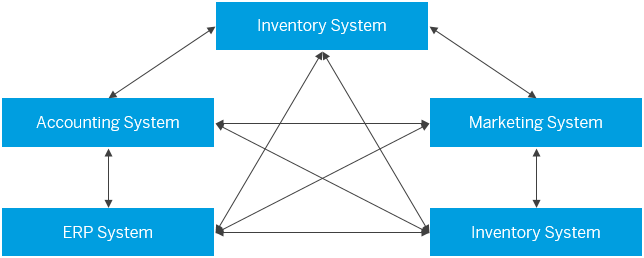

Overview of Messaging Architecture
SAP Cloud Platform Enterprise Messaging (Beta) enables you to manage connectivity between different SAP Cloud Platform applications.
In a typical IT landscape, you can come across a scenario where various systems interact and communicate with each other directly, at optimum efficiency. However, as you know, an IT landscape is never static. With time, more systems based on different technologies get added and as a result the complexity of the interactions also increases. Managing this complex web of applications and systems require time, money, and resources and, in the mid-term, it's not efficient or scalable without the introduction of a messaging architecture.
The following diagram illustrates peer-to-peer integration without messaging middleware.
Enterprise Messaging simplifies connectivity. SAP’s messaging-as-a-service solution in the Cloud enables you to connect the applications in your landscape through messaging hosts. A messaging host acts as an intermediary message broker and is responsible for sending and receiving messages between your applications. It effectively decouples communication between senders and receivers and is responsible for ensuring that messages are sent to all intended receivers. If receiving applications are temporarily offline, the messaging host buffers the message until it can be sent to the receiver successfully.
The following diagram illustrates this messaging-oriented architecture with a central messaging host.

The messaging host uses a queue to enable point-to-point communication between two applications. An application sends a message to a specific queue in a messaging host. The intended receiver, in this setup, is subscribed to that same queue and can read any messages from it as soon as they have been published by the sender.
- Manage messaging hosts. For more information, see Managing Messaging Hosts.
- Manage and create application bindings to a messaging host. For more information, see Managing Application Bindings.